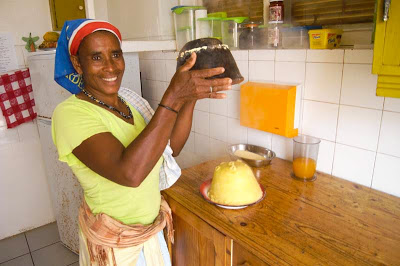

Cuscus

Description
In CapeVerde just like in any other Country there are many traditional dishes such as 2 of the main ones. Cuscus - a breakfast bread and Cachupa- a heavy soup for lunch. These are 2 of my favorite Capeverdian foods along with others such as funginho, gigacida, and the list goes on.
Cuscus is a breakfast food. For those of you who don't know what it is, its similar to a corn muffin or a corn type of bread. It is made fresh and eaten whilst hot off of the stove spread with loads of butter to melt nicely on top. I love eating this with my favorite rasberry tea. Some of you might hate it whilst others love it. It all depends on your taste buds.
Ingredients
- 36 oz extra fine corn meal
- 8 oz precooked cornmeal
- 13 oz sugar
- 4 tsp cinnamon
- 3 cups water
Steps
- Take all of your ingredients and put them all together into a big bowl and with your hands mix it all well, until all incorporated and starting to all stick together.
- Once that is done.Take a strainer and run the entire mixture through it Sifting all of your mixed mixture directly into the plant pot.
- Then cover it completely with aluminum foil.
- Take your empty can and fill it half way with water. Sit your plant pot on top of the can and cover all around the edges with your left over cuscus mix to ensure no steam comes out. Cover your aluminum with a small cloth and pot lid. Being very sure to not let any steam out. Then turn on your fire to medium heat and allow it to cook for about 20 minutes or until you smell the cuscus very fragrantly.
- Once that is done. simply flip your cuscus over onto a plate and slices like a cake, adding loads of butter to every slice.mmmmmmm..... so yummy especially with a warm cup of tea.